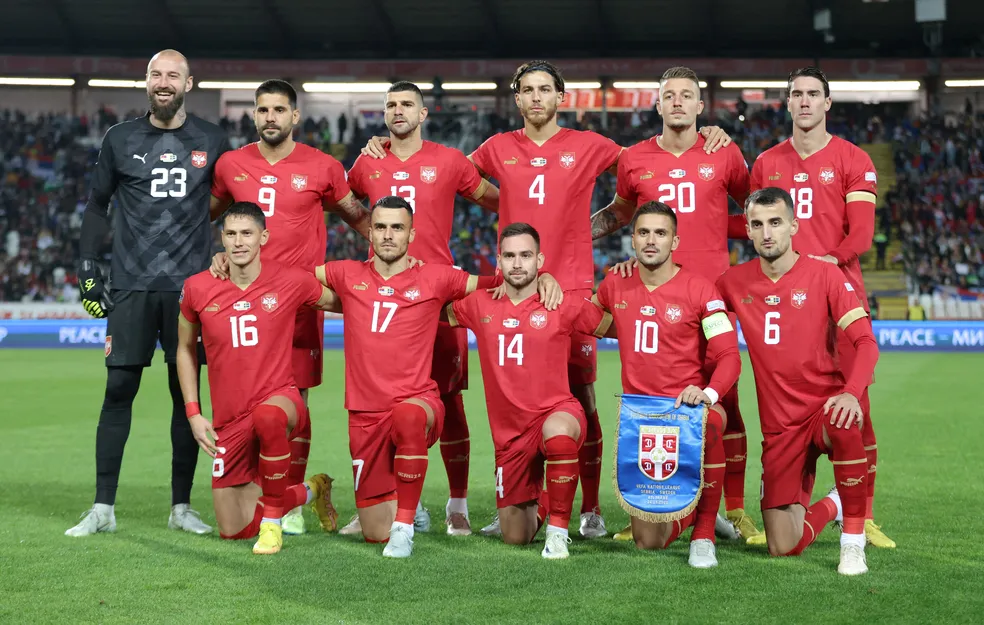
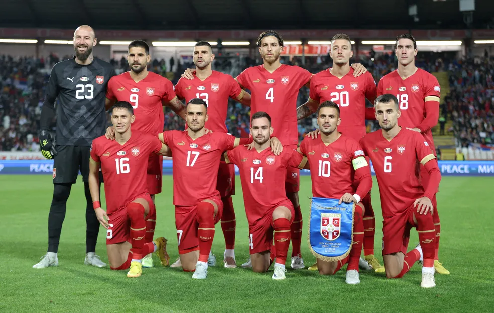

Seleção da Sérvia na UEFA Eurocopa
A Sérvia vem a Euro 2024 com o objetivo de melhorar sua campanha depois de péssimas campanhas, com jogadores ótimos como Dusan Vlahovic, Aleksander Mitrovic e Dusan Tadic.

A Sérvia vem a Euro 2024 com o objetivo de melhorar sua campanha depois de péssimas campanhas, com jogadores ótimos como Dusan Vlahovic, Aleksander Mitrovic e Dusan Tadic.
